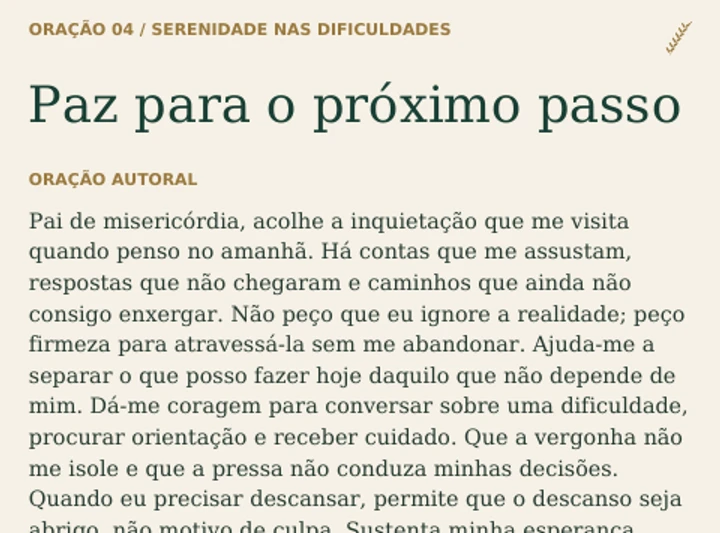

Seis momentos de oração
Provisão e sustento, sabedoria com o dinheiro, coragem para trabalhar, serenidade nas dificuldades, gratidão e integridade.
FÉ PARA RECOMEÇAR. CLAREZA PARA AGIR.
R$ 27,90 · Investimento único
Encontre palavras para orar e direção para o próximo passo. O ebook Prosperidade com Propósito reúne seis orações autorais, reflexões e práticas para cuidar da sua relação com o dinheiro sem abandonar seus valores.
POR DENTRO DO EBOOK
Provisão e sustento, sabedoria com o dinheiro, coragem para trabalhar, serenidade nas dificuldades, gratidão e integridade.
Uma rotina que combina oração, gratidão, reflexão sobre obstáculos e escolha de uma ação concreta.
Um plano com tarefas possíveis para reconhecer necessidades, organizar contas, desenvolver habilidades e rever seus passos.

12 páginas de leitura direta, para consultar no seu ritmo.
Prosperidade com Propósito
FÉ. CLAREZA. AÇÃO.
Tenha por perto um guia para os dias em que você precisa de palavras para orar, espaço para refletir e um próximo passo para dar.
R$ 27,90
Pagamento único pelo ebook completo em PDF.
Você será direcionado ao checkout da Kiwify.
Material de inspiração espiritual e organização pessoal. Não promete resultados financeiros.
ANTES DO SEU PRÓXIMO PASSO
Não. O produto é um ebook em PDF. O livro mostrado nas imagens é uma representação ilustrativa.
Não. O ebook sugere um ritual de dez minutos e um plano de sete dias, que podem ser adaptados à sua realidade.
Não. Ele oferece inspiração cristã e práticas de organização pessoal. Orações e pensamentos não garantem dinheiro ou resultados específicos.